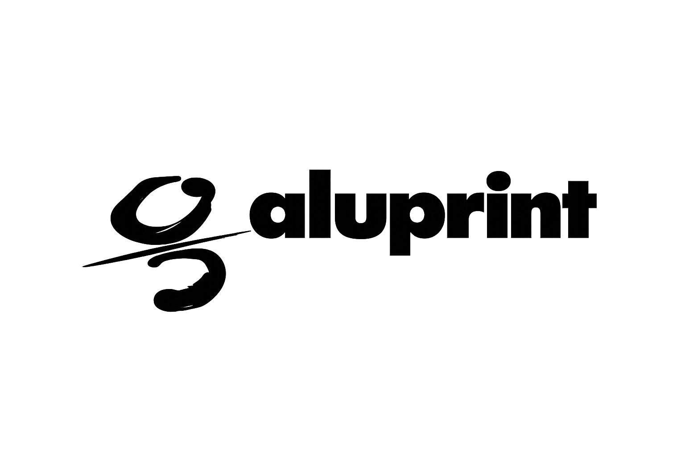

Email & orders
Enters orders and invoices from your inbox
Swiftrix builds AI agents that read your emails, enter orders and invoices, answer customers and prepare reports inside the systems you already use. Anything unclear waits for a person in the morning.

We build AI agents that read emails, enter orders and invoices, answer customers and prepare reports on their own. Connected to your systems, they work around the clock.
Enters orders and invoices from your inbox
Answers customers around the clock
Prepares quotes and reports
Follows up on enquiries and leads
Discover where your time actually leaks and how to turn repetitive manual work into systems that run themselves.
We don’t gamble with guesswork. Every automation we build is planned, tested, and made to run reliably, day in, day out.
Every decision comes from hard numbers, not guesswork, so you know exactly where time leaks are fixed.
Custom, high-performing integrations built to fit your stack and run fast. No generic templates.
Your workflows are tested, tweaked, and optimized weekly to squeeze maximum efficiency from every process.
If we don’t hit the promised KPI, we work free until we do. That’s how confident we are in results.
Real, working solutions: we’ve built custom automations across logistics, recycling, engineering, retail and more. Systems running in production, not slideware.
We are not an agency. We’re a lean, independent team doing good work for good people. Without the overhead, handoffs, or hierarchy.
Reclaim hours every single week.
Get your automations live fast.
Built to turn manual steps into flows.
Automation that scales with your team.
See what drives speed and savings.
Systems built for software businesses.
Six steps from the first call to systems that run on their own.
We learn about your team, goals, and current workflows.
In-depth analysis to uncover leaks and opportunities.
Tailored automation plan designed for your operation.
We build and deploy automations across your key tools.
Weekly testing, monitoring, and improvements for max efficiency.
Double down on what works to unlock predictable time savings.
Automations designed to eliminate manual work and accelerate output.
Maximize every workflow with data-driven improvements.
We digitised the entire protocol sign-off process on the factory floor. Workers log in with their factory ID card, see every new document they must review, and sign off digitally, replacing hundreds of paper forms with a fully auditable record.
We rolled out the same card-based signing system across Aluprint's production line, so management can prove at a glance that every worker has read and accepted the latest protocols, with no paperwork to chase.
We built a program wired into their scanner that checks each scanned paper invoice against the database and tells staff exactly which ones can be discarded, freeing up a large amount of storage space.
A custom app that performs the statics calculations for their geotechnical projects and auto-generates a tailored Word report per project, integrated with their products and handling different anchor types and soil conditions.
We automated the full migration of their very large legacy database from the old website to the new one, cleaning and re-sorting the data on the way so every record landed in the right place.
An automation that generates the association's monthly Excel payout calculations for its members based on the latest land-ownership certificates, a tedious manual task that now runs automatically.
A complete portal for managing clippers end to end: recruit and onboard them, manage their accounts, automate their payouts, and track the sales, views and revenue each clipper generates from one dashboard.
An internal tool built around the Lithuanian Shorts film archive. It syncs the catalogue from their website automatically, builds film programmes that fit a chosen film count and running time, and produces screening and revenue reports as Word or PDF in Lithuanian or English.
Figures, scope and what changed for each client.
Open projectsStill not sure? A short call answers the rest.
We ask for a 30–50% upfront payment to start the work, with the balance due on delivery. Live automations are then kept running under a monthly upkeep fee that covers monitoring, maintenance, and support.
Absolutely. Small teams often see the biggest gains, because manual work eats a larger share of their day. Every build is tailored to your size, budget, and tools.
Virtually anything with an API: CRMs, spreadsheets, email, Slack, databases, payment systems, and custom internal tools. If it has an interface, we can usually automate it.
Both. We start by mapping and diagnosing your workflows to remove waste, then build the automations. Ongoing optimization is part of every engagement.
Yes. There are no long lock-in contracts. If we're not delivering value you're free to stop, though most teams choose to stay.
We're engineers, not a generic agency. Every automation is custom-built for your stack, monitored continuously, and backed by our uptime guarantee.
We build. Strategy is included, but you walk away with working, production-ready automations, not just a deck of recommendations.
Book a call and we will find the tasks an AI agent can take over in your business. First results in one to two weeks.